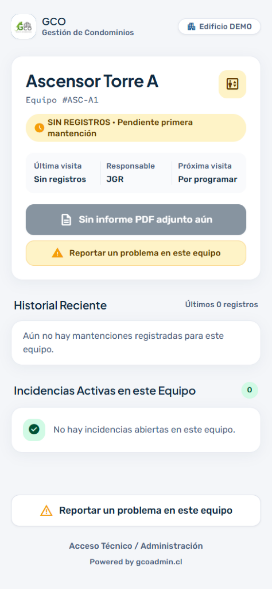

Especialistas en la administración ética y profesional de edificios. Nuestro equipo multidisciplinario está liderado por administradores certificados por la Pontificia Universidad Católica de Chile (UC) y acreditados ante el Registro Nacional de Administradores (MINVU).
Nuestras soluciones integrales están diseñadas para garantizar la eficiencia, seguridad y tranquilidad de su comunidad.

Gestión clara y ordenada de gastos comunes, cobranza, remuneraciones y reportes financieros verificables en tiempo real.

Actualización reglamentaria, asesoría legal y Plan de Emergencia visado por especialistas.

Supervisión rigurosa de infraestructura crítica con proveedores certificados (Ascensores, Bombas).

Evaluación e implementación de control de accesos (LPR, QR) y modernización de sistemas.

Supervisión semanal y atención directa para emergencias, asegurando una presencia constante.
Optimización de pólizas de áreas comunes y gestión eficiente de siniestros ante aseguradoras.
No dependes de una sola persona. Contamos con un equipo de 6 profesionales especializados donde cada área crítica de tu edificio tiene un responsable directo.
Certificado UC • Registro Nacional MINVU
Lidera la relación estratégica con el Comité de Administración, conducción de asambleas, control presupuestario y cumplimiento integral de la Ley N° 21.442.
Jefe de Operaciones en Terreno
Supervisión semanal presencial, inspección técnica de salas de bombas, calderas y ascensores, gestión de emergencias y control directo de proveedores.
Abogada • Registro Nacional MINVU
Inscrita en el Registro Nacional de Administradores. Entrega asesoría legal permanente en Ley N° 21.442, revisión de contratos, reglamentos de copropiedad, actas y respaldo jurídico en cobranzas.
Gestión GGCC y Atención a la Comunidad
Apoya en la gestión y seguimiento de gastos comunes y mantiene una comunicación cercana, clara y oportuna con los residentes y el comité.
Coordinación de Comunidades y Residentes
Canal ágil de comunicación con copropietarios y comité, trazabilidad de requerimientos diarios, emisión de certificados y orden documental de la comunidad.
Sitio Web, Sistemas y Soporte a Comunidades
Mantiene y optimiza el sitio web y las herramientas digitales de la administración, apoyando al comité y residentes en el uso de plataformas, accesos y orden de información digital.
Un proceso estructurado para garantizar resultados medibles y transparencia desde el primer día en tu comunidad.

Realizamos un levantamiento completo del estado financiero, operativo, legal y de infraestructura del edificio para detectar urgencias.

Diseñamos un plan de acción con cronograma de mantenimiento preventivo y coordinamos a los proveedores certificados directamente.

Mantenemos al comité informado mediante reportes contables claros y verificables, checklists digitales y visitas semanales de supervisión.
Control completo para residentes, técnicos, comité y administración. Escanea el QR de cada equipo para ver su estado en tiempo real, reportar incidencias con foto y respaldar cada mantención bajo la Ley 21.442.
Cada equipo crítico del edificio cuenta con una lámina QR imprimible. Cualquier residente o miembro del comité puede verificar al instante su estado operativo sin pedir archivos por correo.
Desde una sola pantalla el comité y los residentes consultan todos los equipos del condominio con contadores automáticos de estado.
Se acabaron los mensajes sueltos en grupos de WhatsApp que nadie recuerda quién atendió. El residente escanea el QR, elige el síntoma y adjunta evidencia.
Mucho más que un lector QR: GCO App integra el trabajo en terreno con el control ejecutivo del comité y la gestión multi-comunidad.

Ficha real de equipo (#ASC-A1): estado operativo, responsable, última y próxima visita, PDF e historial.
Sabemos que cambiar de administrador suele generar temor en los comités. Nos encargamos de guiar todo el proceso paso a paso para que la comunidad nunca quede desatendida.
Asesoramos al comité con las formalidades del acuerdo o asamblea bajo la Ley 21.442 y redactamos las notificaciones formales.
Recibimos llaves, contratos, libros, cartolas bancarias y estado laboral del personal mediante inventario detallado y transparente.
Ordenamos saldos iniciales, fondos de reserva y proveedores certificados sin interrumpir el cobro ni la operación diaria.
Iniciamos visitas semanales de operaciones, atención directa a residentes y ejecución del cronograma preventivo.
Calcula cuánto deja de recaudar tu edificio o condominio y qué impacto tiene una cobranza preventiva y ordenada en el flujo mensual de la comunidad.
*Simulación referencial en pesos chilenos para fines orientativos. Cada comunidad presenta distintas realidades legales, acuerdos de pago y plazos de cobranza.
Equivale a $12.312.000 sin ingresar al año
Equivale a aprox. 0,9 meses de gasto común total de la comunidad.
Cotizar un edificio exige tiempo y papeleo que el comité no tiene. Por eso cambiamos las reglas: visitamos tu comunidad durante 25 minutos y realizamos una Inspección Visual y Diagnóstico Normativo (Ley 21.442) sin pedirte antecedentes previos.
Revisión visual en terreno de sala de bombas, grupo electrógeno, calderas y estado de ascensores.
Detección inmediata de brechas legales, certificaciones vencidas o falencias en el Plan de Emergencia.
Mirada técnica a una liquidación estándar para identificar oportunidades de ahorro y orden contable.
Trabajamos con especialistas locales de respaldo comprobado para proteger la infraestructura crítica, la seguridad y el presupuesto de tu comunidad en el Gran Concepción.
JGR, CONVAL, ROCA, TKE, FABRIMETAL. Enfoque en mantención preventiva, certificación y respuesta técnica oportuna.
ICM, Bombas Concepción, Emilio Yevenes. Supervisión de equipos hidráulicos y tableros para evitar cortes de agua.
ENER, Hidroclima, Climateq. Control preventivo y diagnóstico técnico para una operación estable y eficiente.
Lautaso SPA, Redsys, Home Security. Respaldo en protocolos, tecnología y cobertura adaptada a cada comunidad.
¿Quieres evaluar el estado actual de tus mantenciones y proveedores? Pide tu Diagnóstico Técnico de 25 minutos sin costo.
Nuestro compromiso es la transparencia y la confianza. Esto opinan comités y residentes de Concepción.
"Como presidenta del comité, trabajar con GCO ha sido un alivio tremendo. Nos apoyan y orientan en cada decisión, manteniendo siempre las cuentas claras. Pero lo que más valoro es su calidad humana; se preocupan genuinamente por el bienestar de nuestros trabajadores."
"La gestión de GCO ha sido impecable. Destaco especialmente el respeto y cuidado que tienen hacia el personal del edificio, asegurando que tengan buenas condiciones laborales, lo que se ha traducido en un servicio mucho mejor para toda nuestra comunidad."
"Desde que GCO tomó la administración, el cambio ha sido muy positivo para todo el equipo. Son súper ordenados con nuestros sueldos, nos entregan todas las herramientas de seguridad necesarias y siempre tienen las puertas abiertas para escucharnos. Nos sentimos muy respaldados."
"Se nota el orden. Los cobros de los gastos comunes llegan súper claros y siempre mantienen informada a la comunidad. Da gusto ver cómo trabajan en equipo con el comité y, sobre todo, cómo valoran y cuidan a nuestros conserjes, que son quienes nos cuidan."
"Un 7 la administración de GCO. Se nota que son un gran apoyo para el comité porque todo funciona mucho más ordenado que antes. Me gusta mucho que tienen un trato súper cercano y respetuoso con todo el personal del edificio; los trabajadores se ven más motivados."
"Como residente, me da mucha tranquilidad ver cómo apoyan a la directiva del edificio y mantienen todas las mantenciones al día. Además, marcan la diferencia en su trato con las personas: siempre se les ve preocupados por el bienestar del personal de aseo y conserjería."
Novedades clave sobre copropiedad, mantenimiento técnico y transparencia en el Gran Concepción.

16 DE SEPTIEMBRE, 2026
Integrar el comité no debe ser un segundo empleo no remunerado. Descubre qué exige la ley y cuándo el problema radica en tu administración...
Leer artículo
12 DE MAYO, 2026
Un desglose de los puntos clave sobre transparencia financiera y planes de emergencia que los comités de Concepción deben implementar hoy...
Leer artículo
15 DE MARZO, 2026
Es vital que tu comunidad revise las techumbres y canaletas de forma preventiva. Aquí te explicamos cómo planificar estos trabajos...
Leer artículoResolvemos las dudas clave sobre nuestra gestión certificada y la normativa vigente en el Gran Concepción.
Sí. Nuestro equipo directivo cuenta con certificación académica de la Pontificia Universidad Católica de Chile (UC) y cumple íntegramente con los requisitos legales vigentes bajo la Ley N° 21.442 y el Registro Nacional de Administradores del Ministerio de Vivienda y Urbanismo (MINVU).
Acompañamos al Comité de Administración en cada etapa legal: asesoría en la citación a asamblea o acuerdo de comité según su reglamento, levantamiento de acta de entrega, auditoría del estado financiero e infraestructura inicial, y continuidad ordenada de cobros, fondos y operación sin interrumpir el servicio.
Operamos con presencia en terreno en todo el Gran Concepción: Centro de Concepción, Barrio Universitario, Parque Ecuador, Lomas de San Andrés, Lomas de San Sebastián, San Pedro de la Paz (Andalué, Huertos Familiares, San Pedro del Valle), Talcahuano (Brisas del Sol), Chiguayante y Hualpén.
Entregamos rendiciones claras y verificables con respaldo digital de facturas, conciliaciones bancarias, estado de morosidad, remuneraciones y fondos de reserva en tiempo real, facilitando el acceso y seguimiento desde cualquier dispositivo.